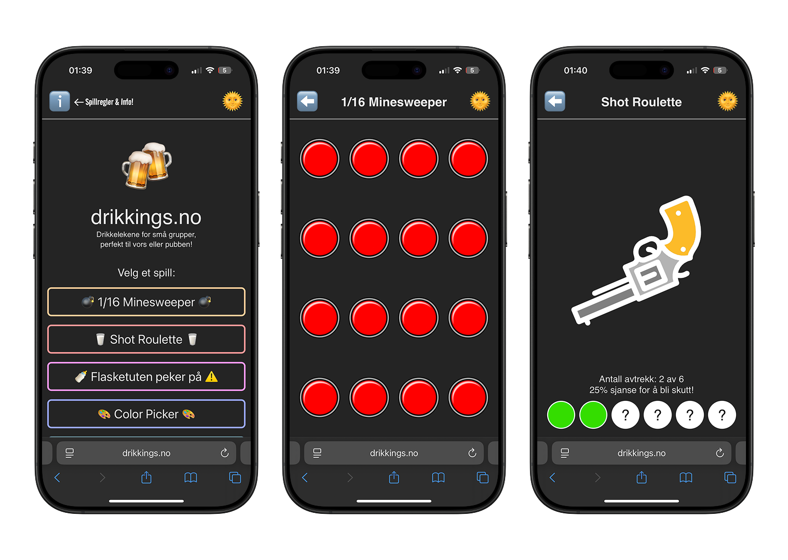

Heisann! Mitt navn er
Daniel Faour.
Jeg er en UX-designer og programvareutvikler.


About me
Jeg har en mastergrad i informatikk fra Universitetet i Oslo, med spesialisering innen UX-design og utvikling. Min bakgrunn i datavitenskap og design gjør meg i stand til å skape engasjerende og meningsfulle opplevelser gjennom teknologi. Jeg søker nye muligheter for å vokse som både designer og utvikler.
Jeg har jobbet med ulike prosjekter, blant annet web- og apputvikling, interaktive installasjoner og taktile grensesnitt. Mine ferdigheter inkluderer objektorientert programmering, front-end utvikling og brukersentret design. Jeg bruker verktøy som Figma og metoder som prototyping, brukertesting og workshops for å forstå brukerbehov. Jeg har erfaring med å lede tverrfaglige team og trives med å løse problemer på en kreativ måte.
Utenom jobb liker jeg fotografering, matlaging, trening, spill og å tilbringe tid med venner. Jeg er lidenskapelig opptatt av design og teknologi og ser frem til å bidra positivt innen feltet.
Skills
 UX-Design
Universiell Design
Etisk Design
Produkt Design
UX-Design
Universiell Design
Etisk Design
Produkt Design
 Web Utvikling
App Utvikling
Programmering
Informasjonssikkerhet
Web Utvikling
App Utvikling
Programmering
Informasjonssikkerhet
 Prosjektledelse
Lederskap
Public Relations
Prosjektledelse
Lederskap
Public Relations
 Salgskompetanse
Salgskompetanse
Se gjennom arbeidet mitt!
Masteroppgave i Informatikk - IN5960
(2024)

"The Three Fundamental Qualities for Emotional Influence in Design"
Denne masteroppgaven undersøker forholdet mellom design og følelser, med fokus på de grunnleggende egenskapene som påvirker emosjonelle reaksjoner i designelementer. Gjennom Research through Design brukes som hovedmetodikk, støttet av prinsippene for Emotional-Driven Design; oppgaven undersøker hvordan disse egenskapene bidrar til å skape følelsesmessig engasjerende installasjoner. Prosessen besto av fire faser: datainnsamling, konseptutvikling, installasjonsskapelse og analyse. Vi identifiserte tre grunnleggende kvaliteter gjennom forskningen: fortellende evne (storytelling), sanselig involvering (sensory engagement) og kjennskap (familiarity). Disse egenskapene er avgjørende for å fremme mer oppslukende opplevelser. Ytterligere elementer som utforskning, meningsfulle interaksjoner, kontraster og robusthet kan ytterligere styrke emosjonell engasjement. Studien gir både teoretisk validering og praktisk veiledning innen designorienterte HCI- og RtD-metodikker, og tilbyr en ramme for fremtidig forskning samt for å skape følelsesmessig engasjerende interaktive artefakter.
Grade: B
Drikkings.no
(2025)
Dette er en drikkelek-app som har som mål å lage engasjerende spill for små grupper uten å bryte opp samtalen. Målet er å gjøre appen tilgjengelig som en web-applikasjon, og derfor bruker jeg React + Vite. Nå finnes det fem spill, som blant annet “1/16 Minesweeper” og “Shot Roulette”, som vises på bildet. Applikasjonen er designet for å være brukervennlig og tilgjengelig, slik at brukere enkelt kan navigere og spille i spillene.
Mus Kontroller
(2025)
Dette er et lite prosjekt jeg laget for å styre musen på datamaskinen ved hjelp av en hvilken som helst Bluetooth-kontroller. Jeg brukte Pygame til å lese kontrollereingene og PyAutoGUI til å styre musen samt enkelte tastetrykk. Perfekt for presentasjoner eller når du ønsker å kontrollere PC-en fra avstand.
Baymax Psykologi AI
(2025)

En psykolog‑chatbot inspirert av Baymax fra Big Hero 6. Utviklet
med Angular og TypeScript, har chatboten som mål å gi emosjonell
støtte og hjelp til brukerne. Den er i bunn og grunn en enkel
web-applikasjon som bruker modeller fra OpenRouter for å generere
svar. Applikasjonen består av et chatte-grensesnitt der brukeren
kan samhandle med boten og motta respons. Konversasjonen lagres i
lokal lagring (localStorage) slik at den er tilgjengelig ved neste
besøk, og brukeren kan slette samtalen om ønskelig.
Merk: Dette prosjektet er kun til utdanningsformål og skal ikke
brukes som erstatning for profesjonell psykisk helsehjelp.
Stor data Analyse Case
(2025)

Dette er en case-oppgave jeg gjorde for et teknisk intervju. Oppgaven bestod av å analysere et datasett med 100 000 rader og 10 kolonner, der jeg måtte finne mønstre og innsikter i dataene. Målet var å analysere og presentere dataene samt visualisere det som virket viktig på en måte som er lett forståelig for brukeren. Jeg brukte Angular og TypeScript til å lage web-applikasjonen. Applikasjonen inneholder et dashbord med ulike komponenter, blant annet en interaktiv tabell, flere typer diagrammer og et kart; disse elementene brukes til å presentere dataene på en oversiktlig og brukervennlig måte.
Gjøreliste
(2025)

En enkel gjøreliste laget med React der du kan skrive inn og legge til oppgaver. Når en oppgave er fullført kan du slette den. Ikke bekymre deg, oppgavene lagres i lokal lagring slik at de er tilgjengelige ved ditt neste besøk!
Threads of Life
(2023)

Promosjonsplakat for en interaktiv installasjon fra et gruppeprosjekt i IN5120 - Tangible Interaction. Her lagde vi et interaktivt og utforskbart miljø ved hjelp av flere tilkoblede Arduinos, som simulerte forbindelsene mellom sopper i en ekte skog.
Glassic Melodies
(2023)

En interaktiv installasjon fra et gruppeprosjekt i IN5120 - Tangible Interaction, der Arduino og Ableton brukes til å spille musikk gjennom berøring av et vinglass. Installasjonen simulerer resonanslyden som oppstår når du glir fingeren over glassets kant, hvor musikkens tempo endrer seg basert på hvor raskt du spiller på glasset.
JaktApp
(2021)

I dette prosjektet var målet å utvikle en Android‑applikasjon som hjelper jegere med å oppnå en vellykket jakt ved hjelp av API‑er fra Meteorologisk institutt og Google Maps. Prosjektet ble gjennomført som del av IN2000-kurset i programvareutvikling, og appen mottok pris for årets beste applikasjon. Appen inneholder et kart som viser brukerens nåværende posisjon sammen med værvarsler og farevarsler. I tillegg har den en funksjon for å spille opp et utvalg av dyrelyder, innspilt med ekte jaktinstrumenter, slik at man kan lokke byttet innenfor skyteavstand.
Ergon
(2022)

Dette prosjektet tar for seg utfordringene unge voksne møter når de bruker lange timer foran datamaskinen. Det innebærer utviklingen av en smart setetrekk, “Ergotrekk”, som oppdager dårlig holdning via innebygde trykksensorer. Når brukeren sitter feil, vibrerer trekket forsiktig for å minne dem på å justere stillingen. Med “Dock” kan brukeren styre produktet etter behov, for eksempel deaktivere det under møter. Docken viser også brukerens holdningspoeng ved dagens slutt. Denne løsningen gjør at unge voksne enkelt kan opprettholde riktig ergonomi, og bidrar til komfort og fokus gjennom hele arbeidsdagen.
Interra
(2020)

Dette prosjektet fokuserer på å styrke unge voksne i alderen 20‑30 år til å bli mer miljøbevisste i hverdagen. Ved å tilby skreddersydd informasjon og handlingsrettede innsikter knyttet til deres daglige oppgaver, har vi som mål å motivere denne aldersgruppen til å ta i bruk mer bærekraftige vaner. Gjennom en bruker‑sentret tilnærming identifiserte vi hindringer for bærekraftig atferd og fant praktiske løsninger som er lette å integrere i hverdagslige rutiner. Målet er at brukerne gjør flere miljøvennlige handlinger, slik at sporadiske tiltak blir en fast praksis og bidrar til en grønnere planet.
Walleyway Spill
(2019)

Under videregående skole ble vi i faget “Informasjonsteknologi 2” gitt oppgaven å lage et spill med kun JavaScript, HTML og CSS. Jeg utviklet en remake av det klassiske spillet Walleyway, som først lanserte på Gameboy og hvor du styrer en padle for å slå en ball rundt og knuse klosser. Spillet ble designet for tregere maskinvare, så det kan kjøre raskere på moderne enheter. Kanskje du er klar for utfordringen?